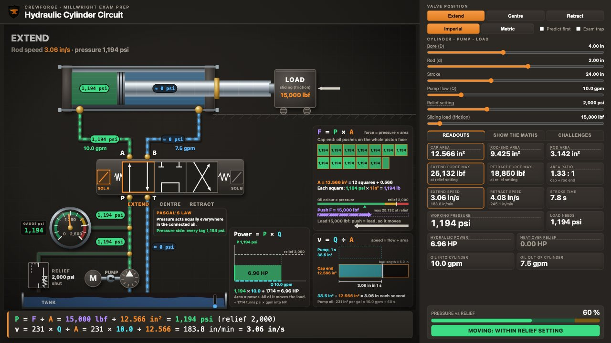

Hydraulic cylinder circuit
A basic circuit: pump, relief valve, a 3-position directional control valve and a double-acting cylinder. Set the bore, rod, pump flow, relief setting and load, then shift the valve to extend, centre and retract. Watch the oil, the gauge and the rod, and see why the same cylinder pushes harder one way and moves faster the other.

Open full screen · Exam preparation only: always check the machine's hydraulic schematic, the manufacturer's data and your site lockout procedure.
Want the full lesson?
Every simulator in the program comes with a full lesson, worked exam questions, a scored challenge, a printable textbook chapter and unit tests. See a complete one free.
More free simulators
Rigging, hydraulics, shaft alignment and pumps. The same simulators used in the lessons and the videos.